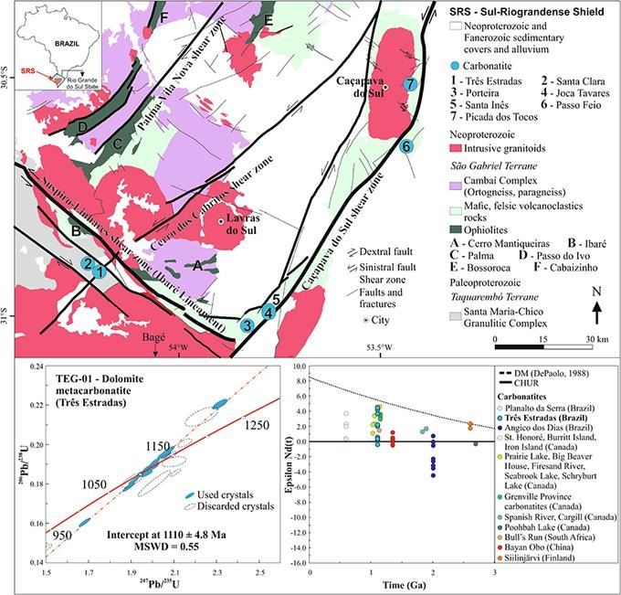

Nd-Sr-Hf isotopes and U-Pb ages of mesoproterozoic Três Estradas Alkaline-Carbonatite Complex, Brazil: Implications for Sul-Riograndense Shield evolution and Rodinia Break-up

Resumo em Português
A primeira ocorrência de carbonatito Mesoproterozoico no Cráton Rio de la Plata (CRDP) indica um evento extensional anterior à abertura do Oceano Charrua. São apresentados dados isotópicos Nd-Sr-Hf e geocronológicos U-Pb em zircão para o Complexo Alcalino-Carbonatítico Três Estradas (TEC), localizado no extremo sul do Brasil. O complexo consiste predominantemente em rochas ultramáficas, carbonatitos e, subordinadamente, sienitos fenitizados deformados e metamorfizados em condições de fácies xisto-verde a anfibolito. Idades U-Pb entre 1110 ± 4,8 Ma e 1123 ± 15 Ma, derivadas respectivamente de um metacarbonatito dolomítico e de um metasienito associado, delimitam o momento do posicionamento do TEC.As assinaturas isotópicas Nd-Sr-Hf indicam que as rochas do TEC foram derivadas de um manto heterogêneo, isotopicamente depletado em Sm-Nd e levemente depletado a enriquecido em Rb-Sr, com pouca influência de crosta antiga, sendo derivadas da mesma fonte de magma parental provavelmente submetida a intenso metassomatismo. As assinaturas isotópicas Nd-Sr e as idades de cristalização do TEC permitem correlacioná-lo às intrusões carbonatíticas das províncias alcalinas de Ontário e Grenville, no Canadá (Laurentia), associadas ao evento magmático Keweenawan (1,11–1,09 Ga). De acordo com as reconstruções paleogeográficas de Rodínia, o Cráton Kalahari teria se juntado a Laurentia e ao CRDP apenas em 1050 Ma. Em ~920 Ma ocorre a geração de crosta oceânica no Cráton Rio de la Plata com a instalação do Oceano Charrua e o início da formação do Cinturão Dom Feliciano, concluído em ~540 Ma, com pico de deformação e metamorfismo em 650–630 Ma.